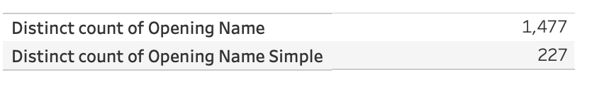

Chess Database Visualization

Reflections
Data Selection
We chose the Chess dataset because we were curious to gain a better understanding of the strategies used to win the game, the types of openings are popular, and the relationships between color, skill and opening. While it is a simple game, there are constantly new things being learned about the game. We decided to take a deeper look at the lichess database to see what we could gather. Lichess is a free to play online chess website and hosts a wide range of chess players, from the top players in the world to beginners.
The data set did not have any missing field values so we did not have to remove data points. However there were a couple columns we had to calculate/clean up. The main one was the names of the openings. Due to all the different variations of openings, there were 1,477 unique opening names in the original dataset. After combining some of these variations into their parent opening, it reduced this down to only 227 unique names. Finally we decided to exclude opens from the graphs that had less than 100 games played with them, as the bars were too small to gather any meaningful data.

Exploration
We explored the data and for our visualization narrative we decided to use the information available to see how different factors impact winning. In the end we decided to look into the color of pieces, opening style, and opening sequences. Further digging into this area, we split up the games in the dataset into the users rating levels, to see if there was any difference between low level games and high level games. We created 8 worksheets with pie charts and bar charts.
We wanted to create a heat map for all the squares on the board that would display how often they are occupied, to show us the most popular destinations for moves during the game, however making the visual into a chess board would have been very difficult, as well as searching through the dataset in order to extract the position of each piece at every point in the game. Another issue we ran into cleaning the data was trying to see relationships between rating and other variables, such as number of turns. To get rid of the noise, we could have clustered some of the ratings together, but we weren’t able to figure out how to effectively perform this task. There were a couple of relationships between number of turns and other variables we were thinking about adding, but they didn’t quite fit the narrative we were telling with factors for winning. For example, number of moves and which piece one the game/if there was a tie. Number of moves in the opening and the users rating and just number of turns in a game in general. All things we began to explore, but decided to leave it out of the final story.
Explanation
Our first topic was about opening strategies and how often white wins. White is said to win 50% of the time, while 45% of the time black wins and 5% it is in a tie. This is generally considered standard, so we felt good the data had a decent representation of normal chess games. It was also interesting to see that white won by checkmate and resignation at about the same rate over black, but they both lost by timeout about the same number of times. So in fact the color of your piece does not seem to impact how often you’ll run out of time. Then we want to take a look at which opening the players decide to play and how that would impact the game. To get the reader more acclimated with chess openings, we gave a list of opening styles and their popularity and specific openings and their popularity. One thing that actually stood out was how popular the Sicilian Defense was, it was almost 3 times as popular as the Ruy Lopez which we thought was the most popular and twice as popular as the French Defense, which was in second place. It was then time to combine the winning data with the opening data and see which openings helped which pieces. As expected white tended to win every opening style, except “Flank” which was about 50/50. Getting into the specifics of the openings, of the variations that had at least 100 games, black only won 4 of the 18. We were expecting it to be closer to 7/18 but since one of the opening black wins is the Sicillian (the most popular by far) that’s likely how it’s win rate is closer to 45%. Finally we took the quality of the players in the game into account. As the skill got higher, even the flank opening style which appeared to be even for black shifted into white’s favor for strong players. When looking at the individual openings, a trend of white closing the gap on openings as the player level gets stronger can also be seen. This shows just how strong the white pieces are when extremely knowledgeable and practiced players play, being able to overcome normally disadvantageous beginnings of games.